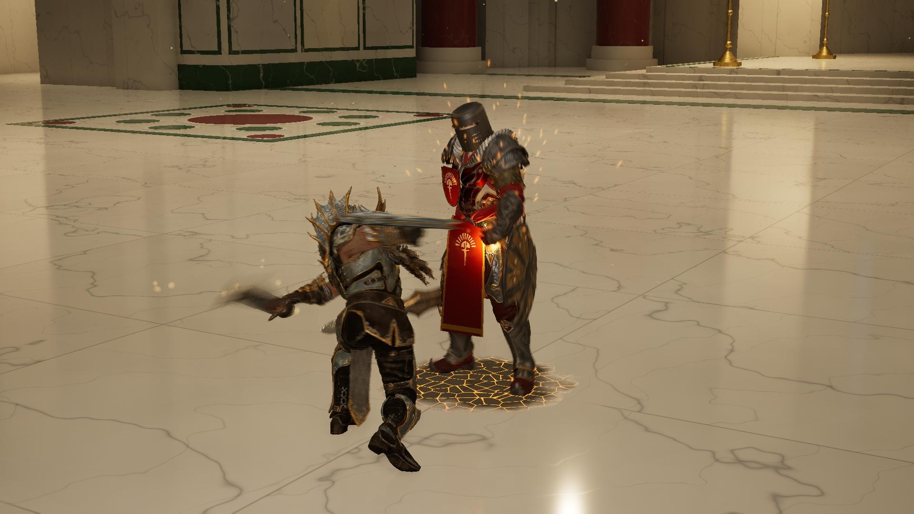
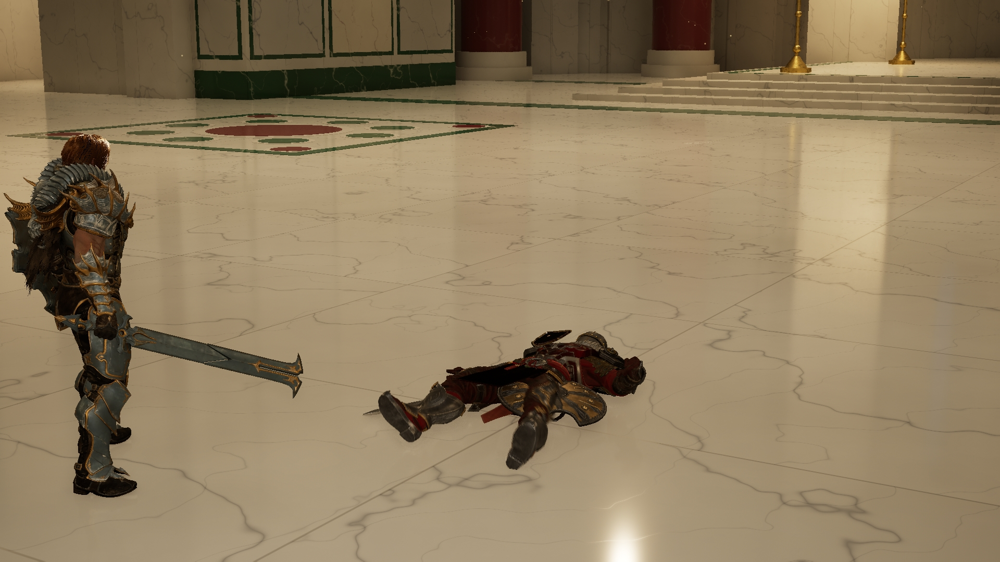
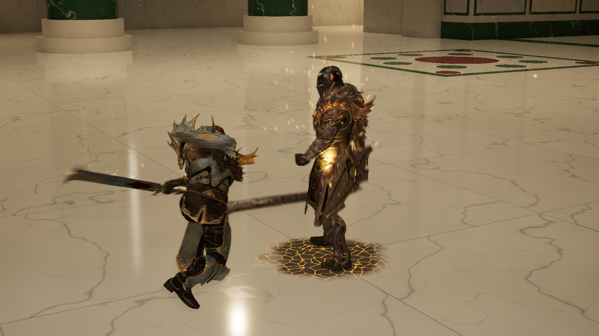
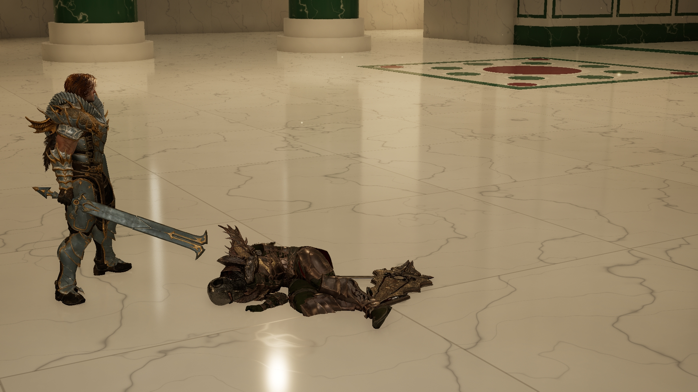

两类敌人 · 普通死亡掉剑
Champion 真实横斩命中后，敌人的原剑和盾从手中释放并独立落地。保留原模型、招式和受伤、死亡、金属落地声音。
这两条是独立 UE 实拍，主要评审武器释放和落地。Dawnknight 仍使用原有后倒，最终姿态继续打磨；Oathbreaker 使用已有贴地倒下版本。四类特殊死法仍保留。不是一次连续交战，也未作为全部死亡效果定稿。
Dawnknight · 普通致命横斩后掉剑
刀刃实际扫过身体

武器独立落地后的收尾

Oathbreaker · 普通致命横斩后掉剑
刀刃实际扫过身体

武器独立落地后的收尾
